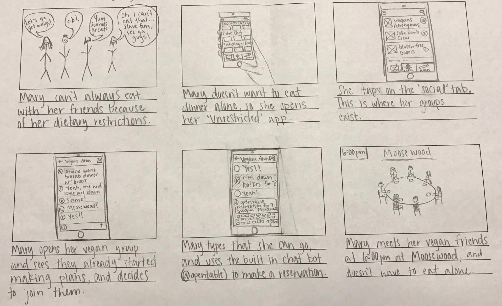

Tasti App
Human-Computer Interaction design of Tasti: an app to assist users with moderate to severe dietary restrictions in the food discovery process.
My Role
UX Design and Research
Team Members
Danielle Grinberg (Graphic Design) Sam Hamburger (UX research)
-
The Challenge
For the 2017 CHI Student Design Competition's theme of Leveling the Playing Field: designing technology for populations that are usually left out of HCI, my team and I as part of Cornell University's INFO 3450: Human Computer Interaction Design class, explored the problem of food insecurity for students with dietary restrictions.
-
The Approach
Discovery
After conducting some intitial background research on the problems individuals with dietary restrictions face, we prepared questionnaires and conducted stakeholder interviews. We posted in large Facebook groups to find individuals with very severe restrictions as well as with friends and classmates who are vegan, celiac, kosher, etc. From these interviews we created a mind map and then grouped the user problems into an affinity diagram.

Observations & Insights
From our stakeholder interviews we constructed a user persona with four goals: (1) to reduce food discovery time through better accessibility of reliable resources, (2) to increase user health in diet through better variety, (3) to minimize social barriers and effects of stigmas towards users, and (4) to reduce cost.
-
Our Solution
After brainstorming 80 design ideas and sketches ranging from tablets on shopping carts to wearable technology, the team decided designing an app would be the most feasbile and useful solution for our stakeholders. The initial idea for the app had three main features: food discovery, social interaction, and meal planning.
Initial Design: 'Food 4 U'

Storyboards
We created four storyboards to address the four user goals from the persona.
Market Analysis
In order to see how Tasti compares to other food discovery and planning apps, we performed some competitive analysis to see how we could differentiate ourselves by focusing Tasti's functionality around finding reliable information for users dietary needs. We found that most apps have an ability to filter based on specific dietary needs, but didn't build the displayed results from the user's needs to start. That is why we decided to have Tasti's displayed results based entirely upon the inputted user data from sign up.
Wireframes
Easy sign up & log in with diet restriction filters built in to the profile, as well as Facebook linked friend updates.
Simple main explore with Recipes, Dining, and Ordering sub-pages.
Restaurant and Recipe information displayed based on profile dietary restriction tags, with options to share, make a reservation via Open Table, and order delivery if available.
Reliability of restaurants and recipes verified via crowd sourced information, with the ability to leave reviews and see what your friends and other users have said as well.
Lo-fidelity User Testing
After prototyping the wireframes using Balsamiq, and testing them with 8 stakeholders, we recieved feedback on our design and how it was and wasn't serving our original user goals. We used Nielsen's Heuristics to evaluate our prototype's painpoints.
UX Design Adjustments
After completing Nielsen’s Heuristics, we decided on several changes to our design. We need to make sure we don’t add buttons where they should not be used. We will be adding in a contact/faq link in the menu so that users can be redirected to technical support if they have any issues. We will be redesigning our explore page to incorporate tabs for our sections instead of stacked sections. On our restaurant pages, we will be simplifying how users can view reviews/ratings using tabs to switch between ‘dishes for you’ and ‘reviews.’ Lastly our bottom navigation bar will use labels in addition to the icon buttons to make the destination page more clear to users before they click the button. We will make the search function able to find restaurants and recipes from any screen on the app.
Hi-fidelity User Testing
InVision Prototype
In our first high fidelity prototype we used InVision to test our user goals. We created 5 tasks to test our prototype. Task 1: Please Sign Up and navigate to your profile. Task 2: Please utilize the filter function to find a dish from a restaurant you’d enjoy. Task 3: Please send a chat to the “Vegan” group & create a new group. Task 4: Go to the Activity Feed and find a dish that has been liked by a friend. Go to the dish and like it, then share it with the Vegan group. Task 5: Please find a recipe of a dish you’d enjoy and write a review about it.
UX Design Adjustments
After our user interviews, we recognized three major UX problem groups: Use of Features, Visibility, and Colors & Options. We had a wide variety of problem instances from the look and feel of UI elements to the lack of use for certain features. We will have to make important decisions moving forward regarding whether or not we would like to remove some of these features that users said cluttered the app. We will have to also make design decisions regarding color schemes and feel of the app. Lastly, we will make sure to increase the visibility of all of our actions within the app so that the primary goal of quickly and easily finding restaurants and recipes that fits a user’s dietary restrictions is met. We met the goal of our study by finding instances where we could improve the visual design and feel, but primarily enhancing the primary goals of the user.
When improving our high-fidelity prototype, we seriously took the feedback from our user evaluations into account. As a result of analyzing the feedback, we came up with three main improvements/changes of the prototype. The changes were to (1) get rid of the Groups and Activity Feed functions entirely; (2) Add a new like and filter function, where users can categorize their likes and search for restaurants and recipes in depth; and (3) Redesign the overall UI and aesthetic of the actual app/prototype.
-
Results
Final Tasti Prototype
Limitations
The main limitations or problems we had with collecting more meaningful data was our lack of depth in our tasks. We should have had several follow-up questions to each task to help collect more data from how the user felt about completing the task. We found ourselves having to ask these questions off the top of our head during the interviews as opposed to having these previously written down. We also realized that actually deploying this app would require a large amount of data collecting and verifying due to the high risk involved with some of our users severe dietary restrictions.
Poster Presentation